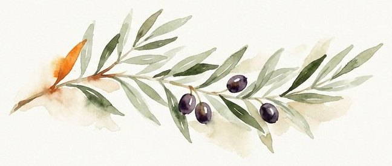
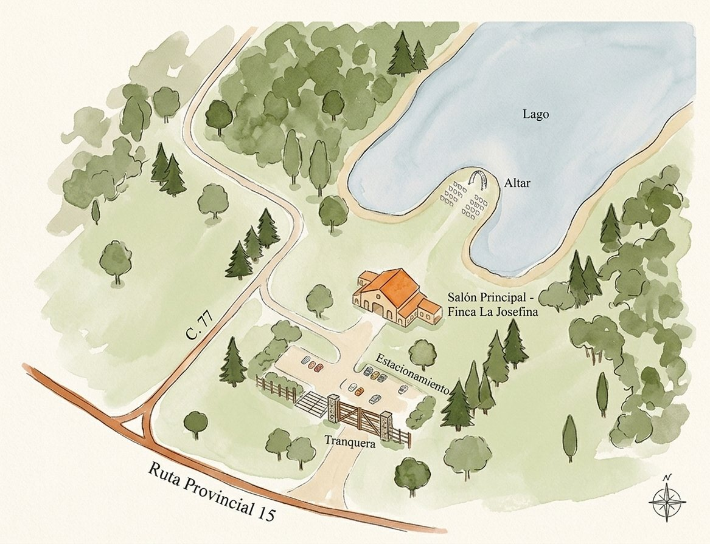

Antes de nuestro para siempre
Ella, siempre buscando un destino nuevo.
Él, descubriendo el mundo al lado de ella.
Después de tantos caminos, encontramos el lugar
donde queremos empezar el próximo.
Antes de nuestro para siempre
Ella, siempre buscando un destino nuevo.
Él, descubriendo el mundo al lado de ella.
Después de tantos caminos, encontramos el lugar
donde queremos empezar el próximo.

Un mensaje del corazón
Elegimos este lugar porque se parece a nosotros: naturaleza, calma, y un horizonte que da ganas de imaginar todo lo que falta vivir.
Queremos empezar esta etapa rodeados de la gente que queremos. Y vos sos parte de eso.
La ceremonia
Nos casamos sobre el pico que entra al agua, rodeados de árboles. Después caminamos unos metros y seguimos festejando.
18:00
Sábado 3 de abril de 2027 · Finca La Josefina
Cómo llegar
Berisso, Buenos Aires. El último tramo es de tierra, así que salí con tiempo.

Y después
Una noche para brindar, bailar, comer rico y reírnos hasta que no quede nadie sentado.
20:00
Salón principal, a unos metros del lago
Si querés hacernos un regalo
Pero si además querés acompañarnos con un detalle para esta nueva etapa, te dejamos el alias.
Nuestro día, también en tus fotos
Todo lo que subas con el hashtag lo vamos a poder ver después, desde tus ojos.
#GuilleYSeba
Queremos contar con vos
Estamos preparando este día con mucho cariño y nos encantaría saber que vas a estar. Confirmá antes del 3 de marzo.
Confirmar asistencia